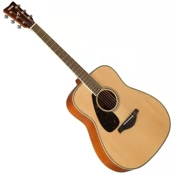

Довгі роки в світі ліворукість вважали відхиленням, шульг насильно перенавчали, лаяли за те, що дитина не пише правою рукою. Однак в кінці минулого століття погляди змінилися.
@Ментор вибачте за горизональну прокрутку. Це чисто для експерименту "white-space: nowrap"ШУЛЬГ ДУЖЕ МАЛО?
Шульг всього 15%. За приблизними підрахунками, кожен сьомий житель планети – шульга. В більшості випадків – це вроджена особливість. Якщо обоє батьків ліворукі, шанс народження ліворукої дитини становить 25%.
Якщо жінка ж вагітніє в віці старше 40 років, то шанс, що дитина виявиться шульгою зростає на 130%, в порівнянні з тим, якби вона завагітніла в 20 років.
Кількість шульг на Землі скорочується. Вважається, що у кам’яному віці їх було близько 50% населення, в бронзовому – 25%, а зараз – всього 5%.
Люди з вродженою ліворукістю, але які з дитинства переучені, в стресових ситуаціях мимоволі виконують дії лівою рукою. Це називається прихованою ліворукістю.
ЧИ ЛЕГКО БУТИ ШУЛЬГОЮ?
Перенавчання шульг практикувалося у всьому світі. Однак в тоталітарних державах цей процес був виражений сильніше, шульг намагалися виправити і «привести до спільного знаменника». До того ж до 70-х років ХХ століття це мало практичну основу: всі писали чорнилом, і ті, хто писав лівою рукою, розмазували їх.
Шульги вважалися «неправильними» дітьми, яких обов’язково потрібно врятувати, і мами дуже нервували, якщо дитина народжувалася ліворукою. І хоча відкрите насильство практикувалось рідко, в школах і дитячих садах іноді використовувалися досить жорсткі методи.
У Китаї робили все, щоб перевчити шульг і не допустити популяризації цього явища в суспільстві. Батьків лякали тим, що ліворукість дитини може спровокувати інші проблеми: заїкання, неврологічні захворювання тощо.
Ліворукі діти важче переносять жорсткі рамки, особливо коли опиняються в незнайомій обстановці. А ось якщо їх залишити самих, їх здібності розквітають. Шульги часто вибирають для себе творчі професії – в галузі мистецтва, музики, спорту. Але коло інтересів шульг не обмежується традиційно творчими заняттями, серед обдарованих математиків і фізиків вони теж є.
Знамениті шульги- Юлій Цезар
- Наполеон Бонапарт
- Нікколо Паганіні
- Чарлі Чаплін
- Мерилін Монро
- Альберт Ейнштейн
- Демі Мур
- Пол Маккартні
- Білл Гейтс
- Анджеліна Джолі
- Королева Вікторія
- Уінстон Черчилль
- Олександр Македонський
- Барак Обама
- Генрі Форд
- Джон Рокфеллер
- Ісаак Ньютон
- Пеле
- Рафаель
- Пікассо
В Європі тиск на шульг чинився аж до середини ХХ століття, така особливість вважалася майже хворобою. Але, як виявилося пізніше, змушувати дитину користуватися незвичною їй рукою рівносильно фізичному та емоційному насильству. В результаті діти починають страждати від нав’язливих рухів, страхів, порушення сну. Така дитяча травма може впливати на людину все життя. Про це стали відкрито говорити неврологи і психологи.
На жаль, шульги частіше травмуються на виробництві. Різне устаткування: верстати, інструменти та інші пристосування, – створено під праворуких працівників. Як наслідок, при роботі на обладнанні для правшів шульги роблять неприродні для них рухи і частіше отримують нервовий і м’язовий стрес, через що і травмуються.
ВСЯ СПРАВА В МОЗКУ!
Дитина в дошкільному віці не буває шульгою або правшею через особливості розвитку організму. Півкулі мозку розвиваються нерівномірно. Права півкуля повністью формується до 5 років, а ліва – до 8-12 років. Саме тому більшість малюків намагаються все робити лівою рукою, але дізнатися чи є дитина шульгою можна вже тільки після досягнення нею 5-річного віку.
У більшості шульг сильніше розвинена права півкуля мозку. Але приблизно у 30% ліворуких людей півкулі розвинені однаково. Ліва півкуля допомагає успішніше вирішувати нові варіанти старих завдань, а права – нові і доведені до автоматизму старі завдання. Права півкуля також відповідає за асоціатівне мислення, обробку інформації від різних органів почуттів. Завдяки цьому шульги думають нелінійно і знаходять нестандартні рішення.
Деякі шульги навіть гадки не мають, що народилися шульгами. Справа в тому, що нас з дитинства вчать все робити правою рукою, принаймні найбільш значущі дії на кшталт їжі або письма. А те, що ми освоюємо самостійно (наприклад, миття посуду), ми робимо так, як нам зручно, а не як привчили. Тому є люди, які їдять і пишуть правою рукою, зате вичавлюють мокру ганчірку і миють посуд лівою, при стрибку відштовхуються лівою ногою, прицілюються лівим оком, хоча це і не завжди пов’язано з ліворукістю.
Цікаво, що з провідною рукою пов’язана наша підсвідомість. Вчені з Університету Чикаго провели експеримент і з’ясували, що, виконуючи звичні дії, люди підсвідомо вибирають більш зручну і комфортну для них сторону – це сторона робочої руки. Наприклад, не бачачи особливих відмінностей між двома продуктами в магазині, шульги вибирають лівий продукт, а правші – правий.
ХТО ТАКІ АМБІДЕКСТРИ?
Люди, які не можуть виділити провідну руку і однаково користуються обома, називаються амбідекстрами.
Леонардо Да Вінчі був амбідекстром – писав правою рукою, а малював картини лівою. Також він мав унікальну здатність до дзеркального письма – справа наліво.
Часто люди припускають, що така особливість ідеальна для життя і їй можна навчитися. Але вчені цей міф зруйнували: спеціально вчитися на амбідекстрів не варто – це може зашкодити нервовій системі в будь-якому віці.
Амбідекстри зустрічаються рідше, ніж шульги. Але амбідекстрія може бути набутою – часто ними стають шульги, які перевчили себе. Тільки 1% від загальної чисельності населення амбідекстри від народження.
ЯК СТАВЛЯТЬСЯ ДО ШУЛЬГ В СУЧАСНОМУ СВІТІ?
У сучасному світі ліворукість вважається нормою. І навколишній простір теж стає комфортніше для шульг. Наприклад, вже продається спеціальне письмове приладдя: точилки з різьбленням проти годинникової стрілки, ручки, ножиці, у яких лезо розташовано з іншого боку, ручки з заглибленнями під пальці лівої руки, що дозволяють правильно захоплювати інструмент, і навіть лінійки, цифри на яких нанесені в зворотному порядку.
Лівостороння акустична гітара Yamaha
Кухонні ножі європейського стилю симетричні. Для шульг є також спеціальні штопори, комп’ютерні миші і клавіатури, хірургічне приладдя, спорттовари, музичні інструменти.
Дітей намагаються не ламати, а пристосувати до комфортного життя. Але все ж для багатьох представників старшого покоління ліворукість залишається чимось тривожним, і бабусі нерідко хвилюються за онуків, розповідають дітям, що потрібно терміново зробити, щоб «виправити» дитину.